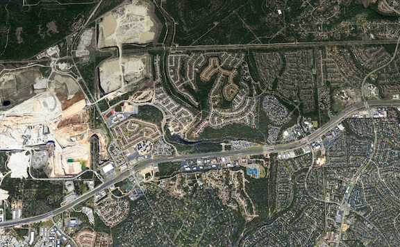

There exists one last bastion of hope, one last place that appears to be safe from the reaches of "progress" and destruction, a sanctuary in which memories of mine don't exist and new ones can be formed, despite being surrounded by those of my younger life.
Sometime destruction misses things. Whether they actually missed it, didn't care about it, or were too lazy to finish the job varies by situation. Akin to discipline momentum, the longer it goes on still standing after everything else around it has been demolished, the less likely it is to meet the same fate. The important part in all of it is that it's still there, safe from the hands that brought its peers to their doom.
Two things should be done in circumstances like this these.
First, appreciate the fact that it remains intact, regardless of the reason. Luck or not, generosity or not, it still stands. Go enjoy it. If it's forestland, go camp or ride bikes or walk or hang a hammock. If it's a building, go sit inside and reminisce on the memories made.
Second, take advantage of it still being there. This may mean leaving it untouched and enjoying its presence from a distance. It may also mean sculpting it to a personal vision that brings value without destroying its form. In the case of the sanctuary above, the best option is to build a trail, a symbol of defiance and perseverance against the overreaching hand to show that things can still be built despite the surrounding demolition.
This trail will be safe. It lies on a flood plain and there is no need for them to claim it for anything.
I will name this trail Bastion. The entrance will be hidden, the preparation and work quiet, and its existence known only to those who share similar ideologies. I know word will get out eventually, but I hope that the reason the trail is the way it is also gets out and encourages thinking. Why is it named Bastion? Why is the entrance hidden? How have I not heard about this trail before?
Like my other projects, I do not know when work will begin nor how long it will take. I know it will take longer than expected just as these endeavors often do, but when the cause is noble, the timeline doesn't necessarily matter.